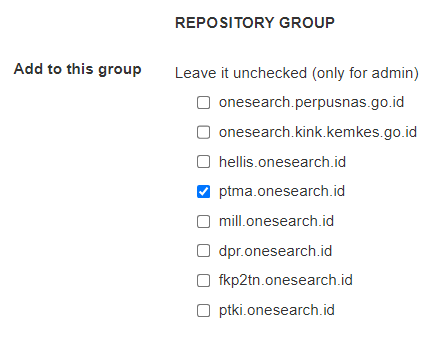
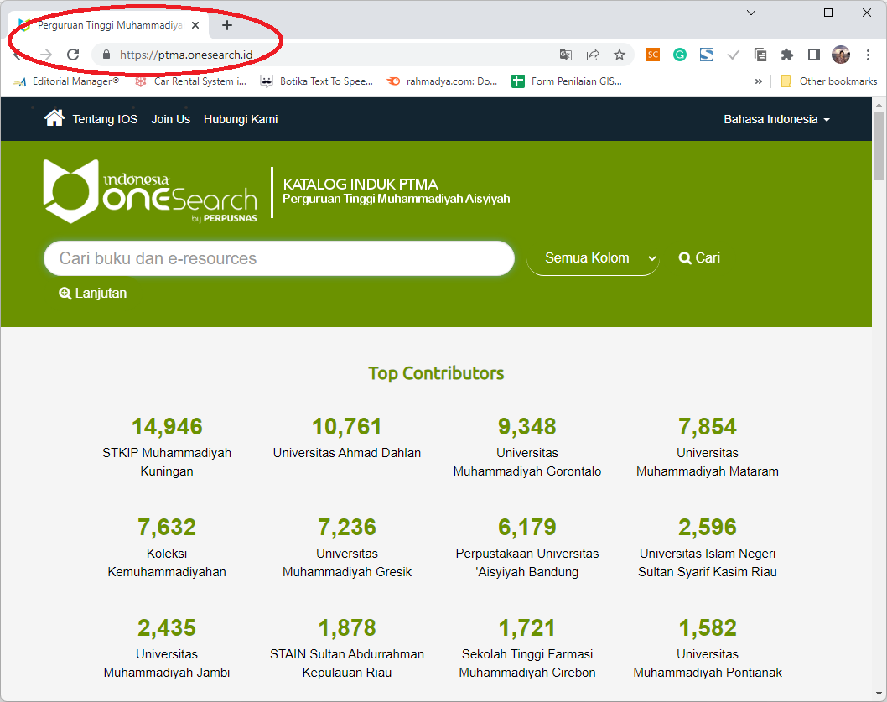

D. Modul Konsorsium
Terkadang beberapa institusi/library/repository memiliki keseragaman, misalnya yang berkaitan dengan kesehatan, pendidikan, atau berdasarkan lokasi geografis tertentu.
1. Menambahkan Institusi ke Konsorsium
Modul konsorsium bermaksud membuat grup berdasarkan kesepakatan, misalnya konsorsium Muhammadiyah. Untuk membentuk konsorsium beberapa institusi dengan jumlah minimal tertentu mengajukan permohonan resmi untuk membentuk konsorsium. Selanjutnya Admin perpusnas akan membuat sub-domain konsorsium.

sub-domain, misalnya: Konsorsium Muhammadiyah. Menu home berisi pemberi kontribusi terbanyak dari konsorsium tersebut.
